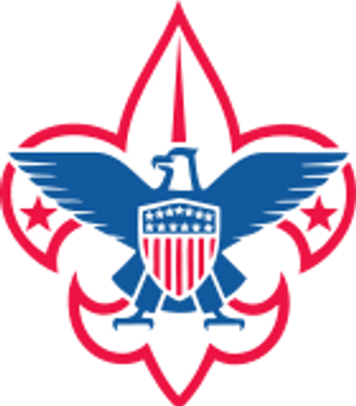
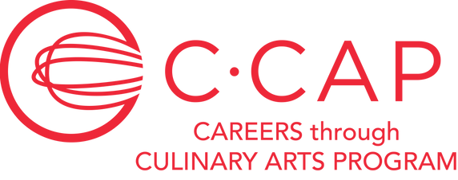
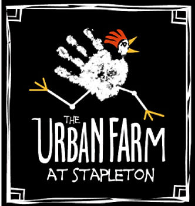

I've got a lot to be thankful for. The least I can do is give my time to serve others in my community. Below is a list of organizations with which I've volunteered.
For over one year, I served as an Assistant Scoutmaster for the Scouts BSA Troop 502, leading, mentoring and teaching young men the importance of things like setting attainable goals, being active in their community, and serving others. The character that the Scouting program instills in these youth is something that will benefit them for the rest of their lives, and I feel honored to know that I could be a part of helping them realize their potential.
I also served as an Eagle Project Coordinator for 3 years, where I help young men reach their goal of achieving their Eagle Scout. It's both very fun and quite rewarding, as each project we embark on is geared toward giving back to the community. I've helped the kids come up with some pretty creative ideas that made the process both fun and engaging.

Epicurean Charitable Foundation is comprised of top food and beverage and hospitality executives who are dedicated to enriching the lives of deserving local students passionate about a career in hospitality or culinary arts. Through scholarships and mentorship opportunities, these gifted, but often financially underprivileged, students are provided with the means to pursue their dreams and become future leaders of the hospitality industry.
I led the planning an execution of all Avero's involvement with ECF - identifying scholarship parameters, selecting winners, planning their scholarship trip to NYC, coordinating with participating restaurants, and overall providing an unforgettable experience for the scholarship recipient.
Through culinary training, career advising and scholarship opportunities, C-CAP works to break the cycle of poverty and empowers our students and alumni for success from their first day on the job throughout their entire career.
I led the planning an execution of all Avero's involvement with C-CAP - identifying scholarship parameters, selecting winners, planning their scholarship trip to NYC, coordinating with participating restaurants, and overall providing an unforgettable experience for the scholarship recipient.

I worked with Elephant Talk, a non-profit organization that provides over 50 tons of food a week to struggling families in the Denver Metro area. I researched various philanthropic organizations within the Denver area to help raise money for Elephant Talk, and helped spread the organization's mission to various individuals during an upscale fund raising event. I also devoted my time and efforts to help distribute food items to various food pantries throughout Denver, for the holiday season.
I volunteered with Task Force, helping to organize and lead a crew to make major alterations to their main distribution facility. Task Force is a non-profit organization that provides many services to needy individuals and families within Douglas and Elbert counties, here in Colorado.
I've also done work for The Urban Farm at Stapleton. This organization provides the ability for local needy families to grow their own vegetables in a community garden setting, and allows them to interact with various animals on the farm for therapeutic purposes.

I've done work with Tennyson Center for Children, which has grown to become one of the Rocky Mountain region's leading treatment centers and K-12 schools for emotionally and crisis-affected children and youth, particularly those suffering from abuse and neglect.
SungateKids is a child-focused facility-based program in which representatives from many disciplines, including law enforcement, child protection, prosecution, mental health, medical and victim advocacy work together to conduct interviews and make team decisions about investigation, treatment, management and prosecution of child abuse cases.
I helped raise thousands of dollars for an annual charity event, and helped generate awareness for the organization amongst our partner community.